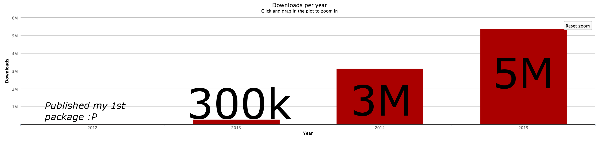
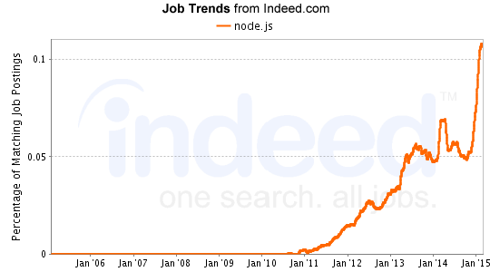

Node.js is Scary
What? Who? Where? Why? How?
Created by Fabiano PS April 2015
Zenhub / AxiomZen
we are hiring!
Presenter

- 5y developing web software
- <3 Open Web
- 2 years full time JS
Who using?
Zenhub, Walmart, eBay
..Microsoft, Yahoo, Linkedin
..Uber, Medium +1000s more
Who else?
Downloads using the official package manager:
no wonder Node.js is called a cancer
Who job?
10% of all jobs at Indeed
What?
"Node.js is an open source, cross-platform runtime environment for server-side and networking applications based on Javascript language"
It's currently popular for creating web servers
API, website, webapp, real-time, &+
When?
Born in 2009 as a hack on top of V8, the JS engine from google chrome. Incubated and trademarked by Joyent.
The ecosystem was small but had the right pieces, contrary to what's expected of Javascript it exposed very good low level APIs, and an outstanding package management system making it easy to create software by composing modules and creating your own.
Why using?
Recommended when you are:
- ok/like Javascript
- prototyping ideas
- iterate fast
- real time apps
- mobile/web API
- isomorphic websites
Why not?
(No Hard Rules) not Recommended for:
- when things cannot break (building a bank/rocket)
- when you can afford to focus only backend
- you really dislike Javascript
- ...